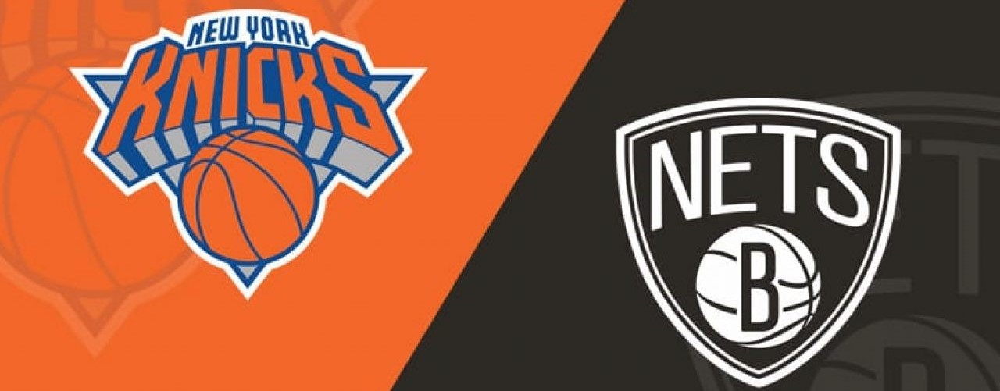

Basketball & Me
Basketball has always been my favorite sport to play, and for a while was my favorite to watch as well. Almost every day in the summer, my friends and I go to play basketball at Veterans Park, sometimes we have as many as 15 people playing on the courts at a time. In basketball, I mainly shoot 3's or long mid-range shots since posting up is hard at my size. Also, my favorite team has always been the Knicks, no matter how bad they are year to year. The Nets are a team I am also a fan of since they are also another team quite close to home.
NBA
In the NBA, despite not being on the Knicks, my favorite player is Kawhi Leonard, because of his MJ like skill set, his drive to win, and his humbleness off the court. Kawhi is unlike any player because he has the right mentality, unique skillset, and has a small ego. So far, Kawhi has 2 championships, 2 finals MVPs, 4 all stars, and an All-NBA selection. He currently plays for the L.A Clippers along side co-star George Paul.
